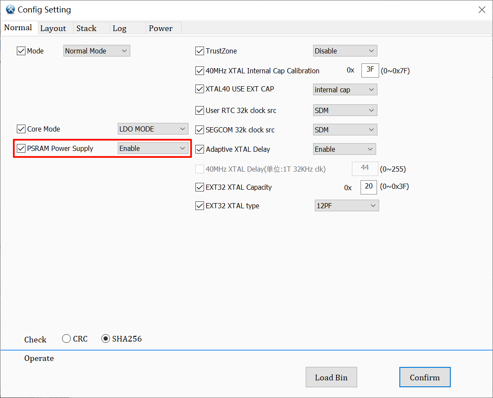
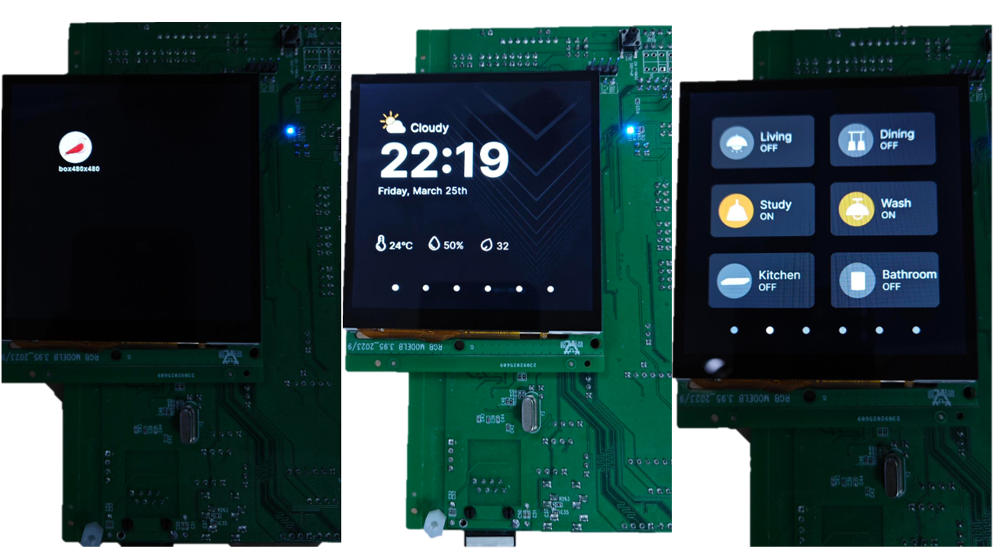
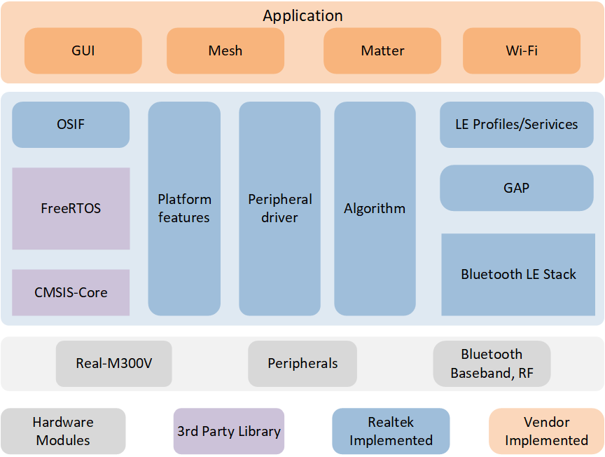
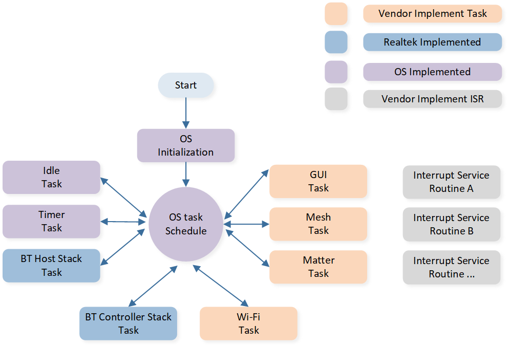

86Box
86Box 中控是智能家居系统的重要组成部分，具有集中管理和控制各种智能家电的功能。其设计类似普通开关插座，可以方便地安装在墙壁上或嵌入墙壁内。用户只需通过手机、平板等专用应用，即可远程控制空调、电视、灯光、窗帘、门锁等各类设备。86Box 中控使家庭智能化管理变得尽心且便捷，极大提升了家庭生活质量。
概述
本文介绍了基于 Realtek RTL8772GWP 的 86Box Smart Home 方案相关信息，旨在帮助用户搭建开发环境，包括了解 SDK、编译和烧录固件及系统测试方法等。开发者可烧录 SDK 中的测试文件，确保开发环境配置得当、EVB 可以正常工作。
备注
本文所述示例方案采用 Realtek RTL8772GWP EVB，搭配 st7701s 驱动的 RGB(480 * 480) LCD 显示、gt911 驱动的触控屏模组，开发者若选用本文相同的硬件环境，可直接运行 SDK 中的样例工程。
如需适配其他型号的显示屏和输入设备，请参考 移植，适配到新的显示和输入设备驱动。
Realtek RTL8772GWP 芯片支持的显示接口：i8080、qspi/spi、RGB888/RGB565。
实用案例
下图显示了 86Box 应用包含的模块：

86Box 系统模块组成
支持功能
Realtek 86Box 应用程序提供完备功能支持:
支持蓝牙 Mesh 1.1/1.0 协议
支持 Matter 协议
支持 Wi-Fi 入网
支持可视化 UI 开发
环境需求
RTL87x2GWP EVB
LCD 屏幕模块
Wi-Fi模块
Mesh dongle 模块
Matter 设备
ARM Keil MDK: ArmMDK
MPTool_kits: RealMCU-Tool
DebugAnalyzer: RealMCU-Tool
RVisualDesigner: RealMCU-Tool
scons 4.4.0: python 环境运行 pip install scons==4.4.0
GCC: Matter arm-gcc
硬件连线
EVB
EVB 提供了用户开发和应用调试的硬件环境。86Box 应用使用 Model B EVB 进行演示，EVB 由母板和子板组成。EVB 具有下载模式和工作模式，下载模式用于烧录固件等功能，工作模式为正常运行应用程序模式，开发者需要配置 EVB 以进入所需的模式。有关 EVB 母板的详细介绍和使用方法请参阅 评估板指南。

86Box EVB 接线
Wi-Fi模块
配置选项
SDK 中 86Box 方案的配置在 SDK\applications\86box\proj\menu_config.h 中，默认配置如下：
#define CONFIG_REALTEK_BUILD_GUI_OS_HEAP /* RTK GUI Use OS Heap */
// #define CONFIG_REALTEK_BUILD_MATTER_SWITCH /* Enable Matter Switch */
#define CONFIG_REALTEK_BUILD_MESH_SWITCH 0 /* Enable Mesh Provisioner, 0: disable, 1: enable */
#define CONFIG_REALTEK_BUILD_WIFI_NIC 0 /* Enable WIFI NIC, 0: disable, 1: enable */
备注
当配置修改后，根据所支持的编译方式重新构建工程后配置生效，构建方法请参考 编译和下载 步骤。
CONFIG_REALTEK_BUILD_GUI_OS_HEAP：配置是否使用内部 RAM 为主 RAM 资源，可配置为 PSRAM 作为主 RAM 资源。CONFIG_REALTEK_BUILD_MATTER_SWITCH：配置是否使能 Matter 模块， Matter 模块仅支持 GCC 编译。CONFIG_REALTEK_BUILD_MESH_SWITCH：配置是否使能 Mesh 模块， Mesh 模块仅支持 arm-compiler 编译。CONFIG_REALTEK_BUILD_WIFI_NIC：配置是否使能 Wi-Fi模块， Wi-Fi模块仅支持 arm-compiler 编译。
编译和下载
请参阅 快速入门 进行编译和下载。值得注意的是：
- 生成 Flash Map 步骤：开发人员需要根据
SDK\applications\86box\proj\flash_map.h生成flash_map.ini。 - 务必使能 psram power，其他功能可根据需要进行配置。
{kind=link}

system config 使能 psram power
编译 APP Image 步骤：
86Box SDK 工程路径为：
SDK\applications\86box\proj。Keil MDK 工程路径为：
SDK\applications\86box\proj\mdk。当修改了工程的配置后，需要重新构建工程，将会生成全新工程文件，覆盖原有的工程文件。
构建工程时，在工程路径下打开 cmd 窗口。
对于支持 arm-compiler 的工程，运行命令 scons --target=mdk5 构建 mdk 工程，打开 mdk 工程进行编译，APP image 将生成在以下路径中：
SDK\applications\86box\proj\mdk\bin。SDK\applications\86box\proj> scons --target=mdk5 scons: Reading SConscript files ... ... CC xxxx.o CC xxxx.o ... LINK app.elf fromelf --bin app.elf --output rtthread.bin fromelf -z app.elf scons: done building targets.
对于支持 gcc 的工程，运行 scons 构建并编译工程，APP image 将生成在工程路径下。
SDK\applications\86box\proj> scons scons: Reading SConscript files ... ... CC xxxx.o CC xxxx.o ... arm-none-eabi-size app.elf text data bss dec hex filename 974942 0 221424 1196366 12414e app.elf ..\..\..\tools\md5\md5.exe app_MP.bin MD5 v1.0.4 Output Image: app_MP_sdk_1.0.5.16_5870d5e6-ecdd77cad50adfc46b584686317c7199.bin scons: done building targets.
生成和下载 User Data：
请使用 MP Tool 的 User Data 功能下载
root(0x4600000).bin，写入地址：0x04600000。Demo User Data 路径：
SDK\subsys\gui\gui_engine\example\screen_480_480\。当使用 RVisualDesigner 导出自定义的 UI 时，路径：
RVisualDesigner prj\Export\bin。
测试验证
UI 测试流程
正确完成烧录固件及 UserData 后，令 EVB 切换到工作模式，复位重启。
设备重启后可以看到有 86Box 图标，点击图标进入应用，应用内部具有多个横向标签页，左右滑动可顺序切换，底部圆点标识当前标签页位置，点击可快速跳转。标签页包括主页面、开关页面、空调页面、窗帘页面和 wifi 测速页面，每个页面中的控件如按键等可进行交互。更多控件的交互演示，请参阅 示例 86Box 应用程序。
{kind=link}

86Box UI 演示
Mesh 测试流程
在工程中配置使能 Mesh 模块，构建编译，烧录下载。
将 Mesh Dongle 上电，并保证 dongle 上的开关为 ON 状态，当开关拨至 ON 状态时，dongle 闪烁一次。
EVB 重启后点击 “小鸟” 图标进入 86Box 应用，滑动至开关页面，点击对应开关可观察到 Mesh dongle 亮起或关闭，且与屏幕上灯状态一致。
有关 Mesh 功能详细的介绍和测试请参阅 Mesh Provisioner。

86Box Mesh 演示
Matter 测试流程
Wi-Fi测试流程
软件设计介绍
本章主要介绍 RTL8772GWP 86Box 解决方案的软件相关技术参数和行为规范，为 86Box 的所有功能提供软件概述，包括 GUI 任务、 Mesh 通信任务、Matter 通信任务、Wi-Fi 通信任务等行为规范，用于指导 86Box 的开发和追踪软件测试中遇到的问题。
源代码目录
工程文件目录：
sdk\application\86box\proj。源代码目录：
sdk\application\86box\src。
86Box SDK中的源文件目前分为以下几类：
└── Project: 86box
└── app includes the 86Box user application implementation
├── menu_config.h project construct configurations
├── main.c
└── 86box_init.c
├── lib
├── device
├── peripheral includes all peripheral drivers and module code used by the application
├── profile includes BLE profiles or services
├── dfu
├── dfu_task
├── rtk_gui includes all gui porting
├── gui_port_acc.c
├── gui_port_dc.c display controller port
├── gui_port_filesystem.c filesystem api port
├── gui_port_ftl.c
├── gui_port_indev.c
└── gui_port_os.c os api port
├── realgui/3rd
├── JerryScript
├── JerryScriptPort
├── realgui/app
├── realgui/dc
├── realgui/engine
├── realgui/input
├── realgui/misc
├── realgui/SaaA includes js middle layer function implementation
├── realgui/server
├── realgui/widget includes all the realgui widgets implementation
├── database
├── fs
├── hal_drivers
├── lcd_low_driver includes display pannel IC driver implementation
├── Compiler
└── touch_driver includes touch IC driver implementation
:
└── matter_switch includes Matter switch function implementation
:
├── mesh switch includes mesh driver support
└── mesh app includes mesh application implementation
:
└── wifi_nic includes wifi nic function implementation
Flash布局
应用程序默认的 flash 布局头文件： sdk\application\86box\proj\flash_map.h。
Example layout with a total flash size of 16 MB |
Size(byte) |
Start Address |
|---|---|---|
Reserved |
4K |
0x04000000 |
OEM Header |
4K |
0x04001000 |
Bank0 Boot Patch |
32K |
0x04002000 |
Bank1 Boot Patch |
32K |
0x0400A000 |
OTA Bank0 |
2456K |
0x04012000 |
|
4K |
0x04012000 |
|
32K |
0x04013000 |
|
60K |
0x0401B000 |
|
212K |
0x0402A000 |
|
2148K |
0x0405F000 |
|
0K |
0x04278000 |
|
0K |
0x04278000 |
|
0K |
0x04278000 |
|
0K |
0x04278000 |
|
0K |
0x04278000 |
|
0K |
0x04278000 |
|
0K |
0x04278000 |
OTA Bank1 |
0K |
0x04278000 |
Bank0 Secure APP code |
16K |
0x04278000 |
Bank0 Secure APP Data |
0K |
0x040AC000 |
Bank1 Secure APP code |
0K |
0x0427C000 |
Bank1 Secure APP Data |
0K |
0x0427C000 |
OTA Temp |
2148K |
0x0427C000 |
FTL |
16K |
0x04495000 |
APP Defined Section1 |
0K |
0x04499000 |
APP Defined Section2 |
0K |
0x04499000 |
重要
如需调整Flash布局，请参考 快速入门 中 生成 Flash Map 的步骤。
调整Flash布局后，必须使用新的
flash_map.ini重新进行 生成 OTA Header 和 生成 System Config File 步骤。
软件架构
系统软件架构如下图所示：
{kind=link}

系统软件架构
Platform feature: 包括OTA、Flash、FTL 等。
Peripheral driver: 提供对 RTL87x2G 外设接口的应用层访问。
OSIF: 实时操作系统的抽象层。
GAP: 用户应用程序与 BLE 协议栈通信的抽象层。
Application: 应用层包含用户定义的各个应用任务。
任务和优先级
如下图所示，用户应用程序共创建了8个任务：
{kind=link}

任务和优先级
各任务描述及优先级如下表：
任务 |
描述 |
优先级 |
|---|---|---|
Timer |
实现 FreeRTOS 所需的软件定时器 |
6 |
BT Controller stack |
实现 HCI 以下的BLE协议栈 |
6 |
BT Host stack |
实现 HCI 以上的BLE协议栈 |
5 |
Wi-Fi |
完成 Wi-Fi 初始化 |
2 |
Mesh |
完成 Mesh 初始化 |
1 |
Matter |
完成 Matte 始化 |
1 |
GUI |
处理 UI 显示及交互 |
1 |
Idle |
运行后台任务 |
0 |
备注
可以创建多个应用任务，并相应地分配内存资源。
GUI 任务
GUI 任务的软件架构如下图所示：

GUI 任务软件架构
86Box 应用的 GUI 基于脚本语言配合可视化 UI 设计工具 RVisualDesigner 进行开发，开发者使用 UI 设计工具进行 UI 布局设计和资源配置，再使用 JS 脚本语言进行交互逻辑设计。该开发模式和软件架构灵活便捷，利用 JS 中间件和 XML 解析库来对常用控件和交互方式进行封装，能降低开发者学习成本，缩短开发周期。如何使用 JS 脚本和 RVisualDesigner 进行 UI 设计开发，具体请参阅 使用脚本设计应用程序。
在 GUI 任务中，GUI 利用 HMI(Human Machine Interface) 搭配硬件设备驱动来即时获取和处理用户的交互，包括触屏、显示等，而后 GUI 将信息传给对应的控件，开发者可以在 JS 脚本中通过 api 对用户行为和控件动作进行监听，从而进一步回调处理。此外，GUI 将通过消息队列来实现与其他任务间的信息同步，如 Mesh 消息、Matter 消息、Wi-Fi 消息等。当开发者需要进行移植或适配其他硬件平台时，只需修改相关的接口文件，具体请参阅 移植。
Mesh 任务
Mesh 任务的软件架构请参考 Mesh 概述 文档。
Matter 任务
Matter 任务主要用于初始化 Matter 协议栈。Matter 协议栈是基于官方的 Matter GitHub repository 上开发，并且是开源的。